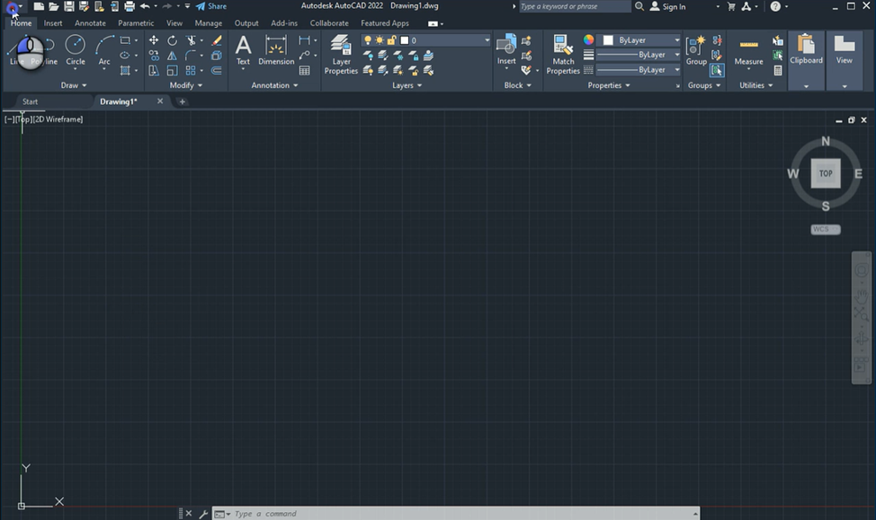
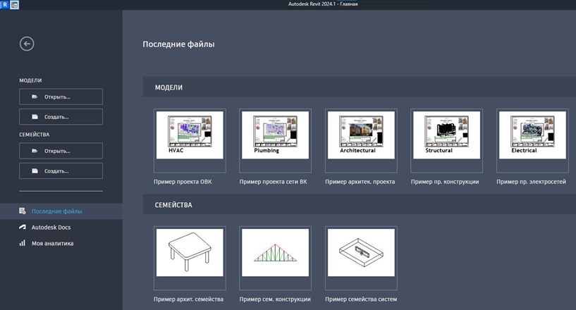
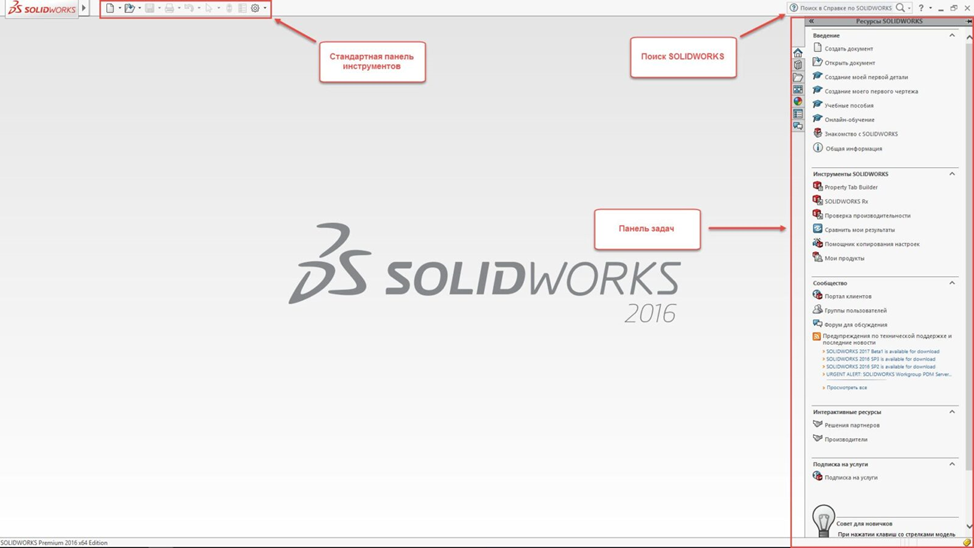
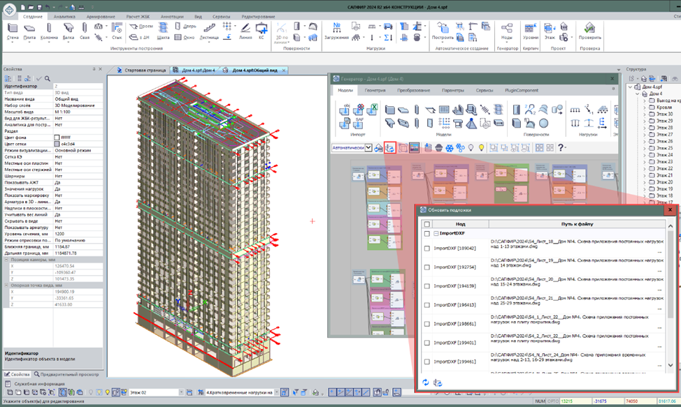
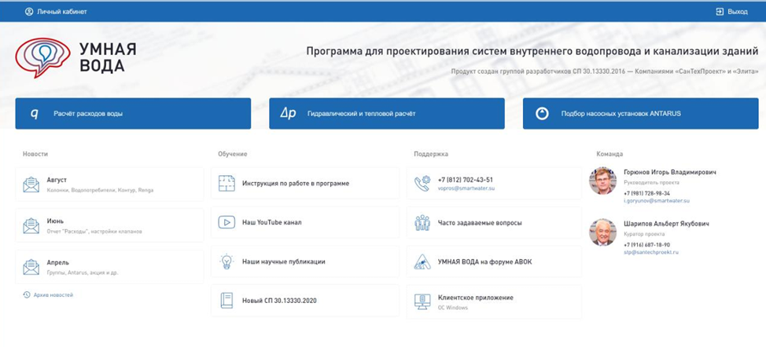

Обзор программ для инженеров проектировщиков

Представьте: вы строите здание. Но вместо ручки и бумаги у вас панель управления будущего:
- 3D-модель, которая сама считает длину труб,
- Программа, которая предупреждает: «Стена здесь железобетонная – нельзя сверлить»,
- Автоматический расчет сметы,
- Даже виртуальная прогулка по еще не построенному объекту.
Это не фантастика. Это реальность проектировщика 2025 года.
Сегодня ты узнаешь, какие программы тебе помогут стать этим капитаном.
Обзор программ
AutoCAD
Для кого: всех направлений (ВК, ОВ, ЭМ, СС)
Назначение: классическое 2D-проектирование
Плюсы:
- Универсально: все умеют открывать DWG
- Подходит для простых схем и чертежей
- Множество плагинов и библиотек
Минусы:
- Нет автоматизации
- Нет связи между видами
- Приходится всё писать вручную

Revit
Для кого: BIM-проектирования, ОВ, ВК, ЭМ, СС
Назначение: создание информационной модели
Плюсы:
- Изменил один элемент – все обновилось
- Автоматические спецификации и таблицы
- Поиск коллизий до стройки
- Можно показать заказчику 3D-прогулку
Минусы:
- Сложный интерфейс
- Требует мощного ПК
- Кривая обучения – первые 2 недели будет больно

SolidWorks
Для кого: нестандартных узлов, тепломеханики, ТХ
Назначение: 3D-моделирование сложных конструкций
Плюсы:
- Точность до миллиметра
- Можно распечатать деталь на 3D-принтере
- Отлично для уникальных решений
Минусы:
- Не для массового проектирования
- Слишком мощный для обычных задач

Используйте SolidWorks, когда AutoCAD и Revit не справляются.
LIRA SAPR
Для кого: конструкторов, расчетов прочности
Назначение: расчет несущих конструкций
Плюсы:
- Считает нагрузки, прогибы, устойчивость
- Интегрируется с Revit
- Нужен при реконструкции и сложных формах
Минусы:
- Слишком сложно для начинающих
- Нужны знания сопромата

Умная вода
Для чего: расчетов систем водоснабжения
Назначение: помощник в проектировании ВК
Плюсы:
- Автоматизация расчетов
- Соответствие нормативной базе
- Снижение риска ошибок

Теперь я поделюсь с вами полезными советами из практики при использовании программ:
Совет 1. Освойте одну программу в глубину. Лучше быть мастером Revit, чем «знающим» пять программ поверхностно.
Совет 2. Используйте шаблоны. Так Вы сможете сэкономить 70% времени на оформление.
Совет 3. Не бойтесь ошибаться. Первые шаги при использовании программ могут быть неудачными – это нормально.
Совет 4. Пройдите полный курс обучения по программам. На курсе Вы узнаете про все функции, которые упросят Вам работу.
Совет 5. Спрашивайте у коллег. Если Вы долго сидите над одной задачей, то попросите помощи у коллег, возможно они уже сталкивались с этим и подскажут как решить.